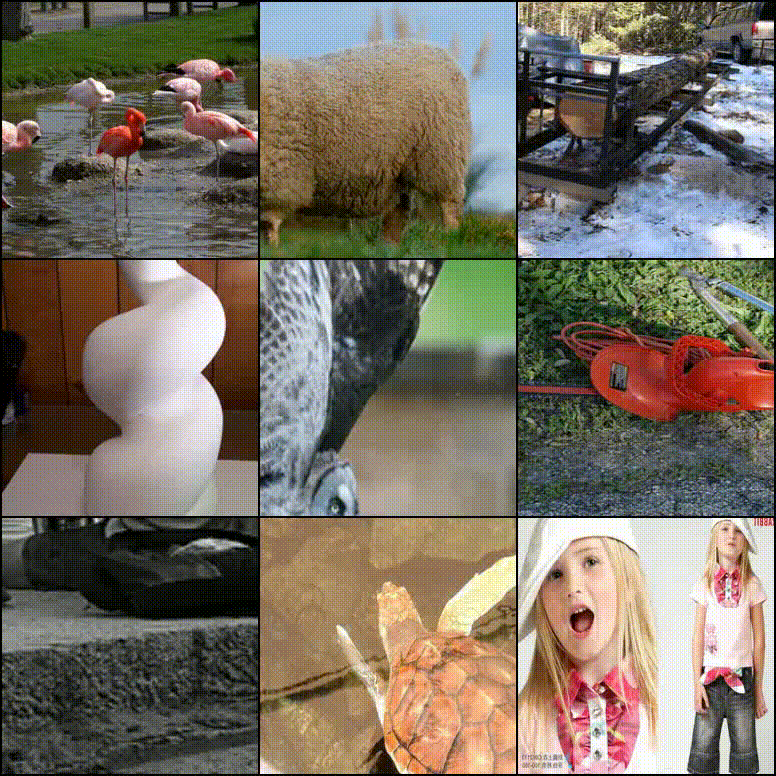
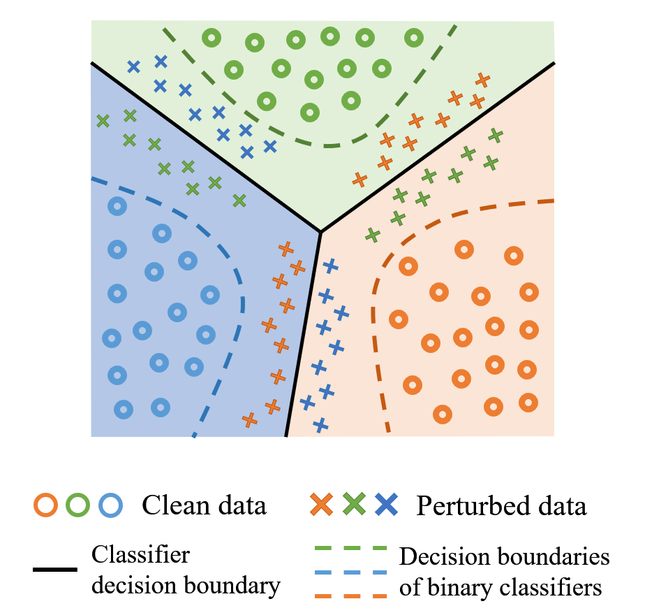
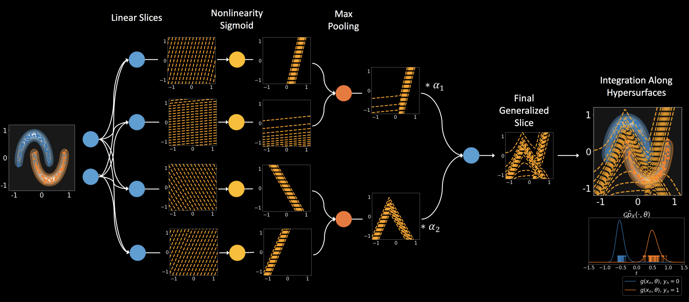
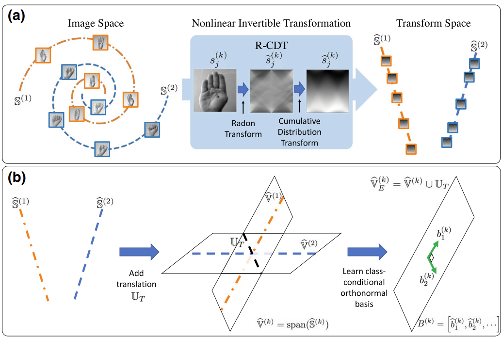
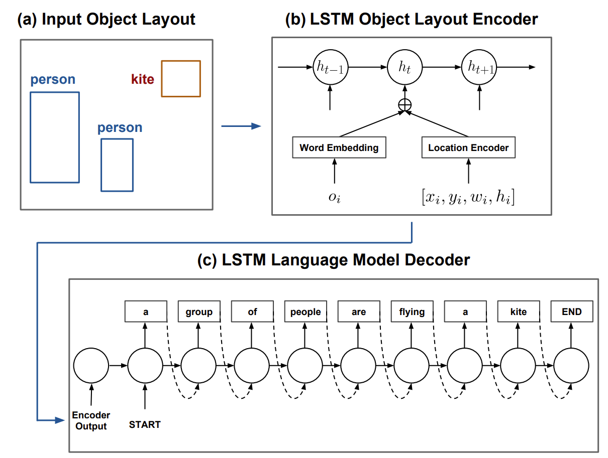
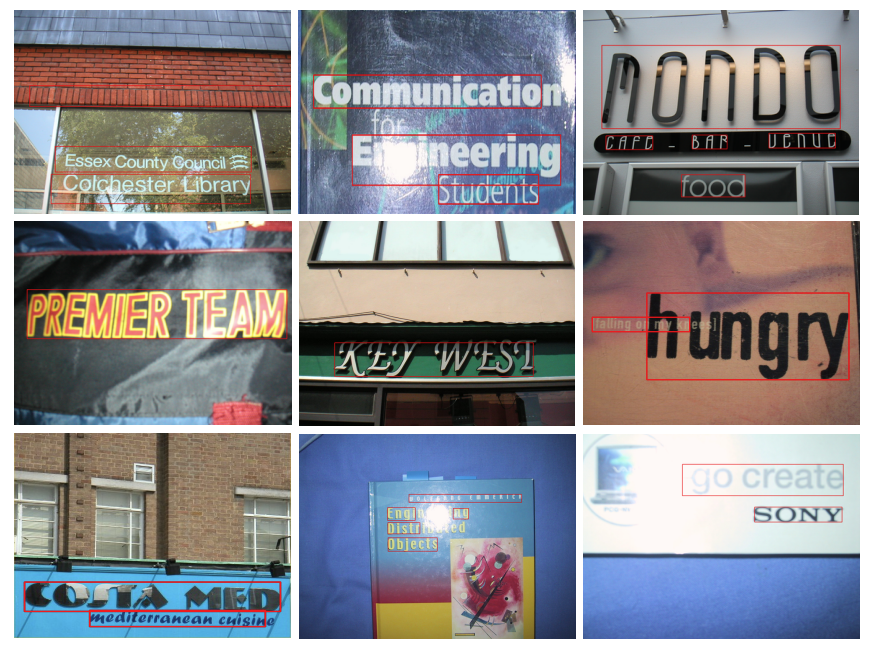
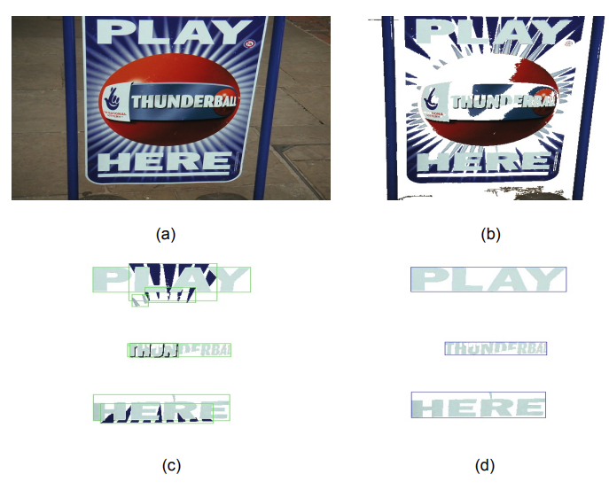

I am a PhD student working in the Imaging and Data Science Lab, supervised by Prof. Gustavo K. Rohde.
My research interests are adversarial machine learning (detecting adversarial examples, robust classification), generative models (energy-based models), and multimodal learning with vision + language.







International Conference on Document Analysis and Recognition (ICDAR2013) robust reading competition winner (out of 15 research teams from 7 countries)
Outstanding Graduate of Beijing, Beijing Municipal Commission of Education, Jan 2014.
Reviewer for Neurocomputing, ACL-IJCNLP 2021, EMNLP2021, ACL2022, ICLR 2022, ECCV 2022, NeurIPS 2022.